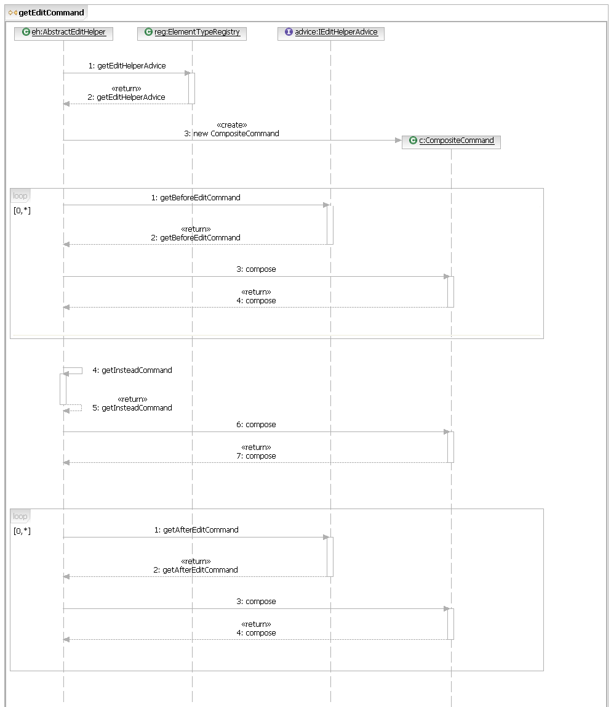

The Eclipse GMF project uses EMF to build its structured data model. EMF defines a framework that allows users to create, modify and destroy model elements in an application. However, the metaclasses defined in an EMF Ecore metamodel are not always sufficient to build a full-featured graphical modeling application. As well, a third party may wish to extend the metamodel and provide specialized model elements in their application.
The Extensible Type Registry provides a way for GMF clients to define an application-specific classification system based on, but alternative to, the metaclasses defined by an Ecore metamodel. It allows GMF clients to describe the domain elements in their application by:
For example, consider a metamodel for the digital logic domain. It contains the basic building blocks for digital logic circuits, such as metaclasses for circuit, AND gate, OR gate and XOR gate. An editor for digital logic diagrams will provide creation tools for these fundamental elements. It should also provide creation tools for some commonly used 'canned' circuits, such as those for a Half Adder or a Full Adder. The Half Adder and the Full Adder are Circuits that contain a specific arrangement of AND, OR and XOR gates. As such, the Half Adder and the Full Adder are element types that add deeper meaning to the Circuit EClass with a specific arrangement of child gates. The editor will need to prevent the deletion of the individual AND, OR and XOR gates contained in a Half Adder or a Full Adder, because deleting them would change the function of the circuit. The Half and Full Adder types and their edit behaviour are defined in the extensible element type registry.
Element types can also be used by visual editing tools to set the values of existing elements in a model.
For example, consider the metamodel for the library domain. It contains, among other things, Writers that have a feature referencing the Books they have written. An editor for library diagrams may provide a drawing tool to connect a Writer to a Book, which means that the Writer is the author of that Book. This drawing tool creates the 'Writes' relationship between a Writer and a Book by adding the Book to the books feature of the Writer. This 'Writes' relationship can be expressed as an element type.
This document describes the concepts behind the Extensible Type Registy and outlines how it is used in other parts of GMF. It includes code examples illustrating how to implement some of the key concepts as well as an overview of the registry design.
The domain-specific concepts that can be displayed, created, modified and destroyed as logical elements in a GMF application are described using element types. Each element type defines how model objects that match its type are to be displayed (by icon and display name), as well as how they are to be created, modified and deleted (by an edit helper and edit helper advice).
There are two kinds of element types: metamodel types and specialization types.
A metamodel type corresponds directly with an EClass in the domain's EMF model, with no futher qualifications. It is not permitted to define more than one metamodel type for a single EClass. All model objects with the same EClass have the same metamodel type. The metamodel type defines the editing behaviour for these matching model objects in its edit helper. By defining a metamodel type for an EClass, the application-specific editing behaviour for that type of element can be defined, and third parties can extend the editing behaviour. An icon and display name other than those defined in the Ecore model can also be associated with this type of element.
Specialization types can extend a single metamodel type or any number of other specialization types. The purpose of a specialization type is to define bind points for advice, icons and display names for new classifications of model objects. It is not permitted to define a specialization type that specializes (directly or indirectly) more than a single metamodel type. All model objects matching the characteristics described by the specialization type as well as those described by the type it specializes will share the same specialization type. A specialization type can extend the editing behaviour of the element type that it specializes by its edit helper advice.
A registry of element types is maintained in GMF and it provides the ability to find:
Static declarations of element types in the elementTypes
extension point are added automatically to this registry the first time
the registry is used. Element types can also be registered dynamically,
and interested parties can listen for notification of dynamic changes to
the registry.
Only one metamodel type matches a model object, but many specialization types can match the same object. Edit helper advice bound to all matching element types will be considered when editing the model object.
Default implementations of metamodel and specialization types are
used to instantiate types registered through the elementTypes
extension point. If a custom element type implementation is required
(e.g., if there are additional properties associated with an element
type, or there is a need to replace the default editing behaviour), an
element type factory can be declared to instantiate specific element
types . The factory is identified by the kind of element type that it
instantiates, and element types that want to be created by this factory
must specify this factory kind in their extension. Alternatively, custom element type implementations can be instantiated by a client and registered dynamically with the element type registry.
Editing behaviour for a metamodel type is defined in its edit helper. The edit helper is a factory for edit commands. These commands are instantiated in response to requests to edit a model object whose EClass matches the metamodel type. By default, the edit commands returned by an edit helper are decorated with commands from advice that matches the model object being edited. The default algorithm for obtaining the edit command is shown below:
Editing behaviour for a specialization type is defined in its edit helper advice. The specialized behaviour decorates the default behaviour provided by the edit helper of the metamodel type that it specializes. When an edit is performed on a model object, advice from all of the specializations that match that object is contributed to the command. Advice can be contributed before or after the default behaviour. Note that there is no guarantee in which order advice commands will be applied relative to each other, except to say that all 'before' advice occurs before the basic edit and all 'after' advice occurs after the basic edit.
Edit helper advice belonging to a specialization type will also apply to all further specializations of that type.
Edit helper advice returns a null command when there is no advice to contribute. It returns an unexecutable command when it wishes to disable the editing gesture.
Edit helper advice can be bound to any existing metamodel type or specialization type to extend the editing behaviour for model objects of its kind.
The scope of an advice binding is an optional attribute specified in the binding XML (the attribute name is 'inheritance'). It can be one of the following:
An edit request carries the information required to obtain an edit command from an edit helper.
The edit request carries a collection of parameters which are used to communicate arbitrary data to the edit helpers and advice. It is recommended that any client contributing element types to the extensible type registry publish a list of the edit request parameters that are understood by its edit helpers and advice.
Each edit request has an edit helper context which is used to identify the model element being edited by the request, from which is derived the edit helper and advice to honour the edit request. For element creation, the model object being edited is the one that will contain the new element. By default, the edit helper context is the container specified in the request. However, the default implementation of the create request will in turn ask the type that is being created for the edit helper context. Edit helpers and advice bound to the type being created can change the default container by finding or creating a different container for the new element in response to the request for the edit helper context.
The edit request for element creation may have specified the feature that should contain the new element. It is recommended that edit helpers be equipped to use a default containment feature, if possible, in the event that one is not specified in the request. This is recommended for the convenience of clients that do not wish to be aware of the feature that should contain a certain kind of element. A specialization type that declares that model objects of its kind must be contained in a specific feature will be created in that feature by default if the request does not specify a feature.
Items in the diagram popup bar are associated with the element type that will be created when the item is selected. Creation tools on the diagram palette are likewise associated with the element type that will be created when the tool is selected and applied to the diagram.
The default semantic edit policy installed on edit parts on a diagram uses the extensible type registry to obtain the command to honour the semantic edit request. It does a lookup in the registry for the type matching the edit context of the request, and obtains the edit command from that type. If the edit command is null or non-executable, the editing gesture cannot be performed.
A lowest-priority icon provider is registered with the Icon Service that returns the icon for an element type by resolving its icon URL.
The same icon provider will also provide the icon for an existing model object by finding the icon for its matching element type from the registry. In cases where many specialized types apply to the model object, the provider will return the icon defined by the first specialization it encounters (searching breadth-first from most specialized to least specialized).
Element types can be used as the semantic adapter in a request to the View Service. In this capacity, the element type communicates the kind of model object for which a view is requested.
The element type semantic adapter is used by the view service in one of two ways:
The modeling assistant service returns element types to describe the kinds of elements and relationships that can be created in a given modeling gesture. For example, if a connection handle is used to create a relationship between two model objects, a popup menu will appear listing the kinds of relationships that can be created between the two objects. This list is populated with element types that describe the relationships.
This section illustrates the usage of the Extensible Type Registry using code examples. Many of these examples are taken from the GMF logic and library examples.
Element types are declared on the elementTypes
extension point.
When the type describes a metaclass in the domain model with no further matching conditions, a metamodel type can be defined:
<extension point="org.eclipse.gmf.runtime.emf.type.core.elementTypes">
<metamodel
nsURI="http://www.ibm.com/xtools/1.5.0/logicsemantic">
<metamodelType
id="logic.circuit"
icon="icons/circuit16.gif"
name="%CircuitTool.Label"
eclass="Circuit"
edithelper="org.eclipse.gmf.examples.logic.CircuitEditHelper">
</metamodelType>
</metamodel>
</extension>
When the type describes a specialization of a metaclass in the domain
model to which further characteristics have been ascribed, a specialization
type can be defined with an Eclipse enablement expression (org.eclipse.core.expressions) that captures those further characteristics:
<extension point="org.eclipse.gmf.runtime.emf.type.core.elementTypes">
<metamodel
nsURI="http://www.ibm.com/xtools/1.5.0/logicsemantic">
<specializationType
id="logic.halfAdder"
icon="icons/halfAdder.gif"
name="%HalfAdderTool.Label"
edithelperadvice="org.eclipse.gmf.examples.logic.HalfAdderAdvice">
<specializes id="logic.circuit"/>
<enablement>
<test
property="org.eclipse.gmf.examples.logic.isHalfAdder"
value="true"/>
</enablement>
</specializationType>
</metamodel>
</extension>
When the Eclipse expression language (org.eclipse.core.expressions) is not effective in specifying the
matching conditions, a custom matcher may be provided:
<extension point="org.eclipse.gmf.runtime.emf.type.core.elementTypes">
<metamodel
nsURI="http://www.ibm.com/xtools/1.5.0/logicsemantic">
<specializationType
id="logic.fullAdder"
icon="icons/fullAdder.gif"
name="%FullAdderTool.Label"
edithelperadvice="org.eclipse.gmf.examples.logic.FullAdderAdvice">
<specializes id="logic.circuit"/>
<matcher class="org.eclipse.gmf.examples.logic.FullAdderMatcher"/>
</specializationType>
</metamodel>
</extension>
with the particular matcher implementation perhaps looking like:
public class FullAdderMatcher implements IElementMatcher {
public boolean matches(EObject eObject) {
boolean result = false;
if (eObject instanceof Circuit) {
// it should be a Circuit, but we'll be defensive
Circuit circuit = (Circuit) eObject;
result = isFullAdder(FullAdder);
}
return result;
}
private boolean isFullAdder(Circuit circuit) {
// ... determine whether 'circuit' is a
// full adder
}
}
When the type describes something that has no direct relationship to a metaclass in the domain model, such as a reference relationship, a specialization of the null element type can be defined:
<extension point="org.eclipse.gmf.runtime.emf.type.core.elementTypes">
<specializationType
id="library.writeBook"
icon="icons/writeBook.gif"
name="%WriteBook.Label"
edithelperadvice="org.eclipse.gmf.examples.library.WriteBookAdvice">
<specializes id="org.eclipse.gmf.runtime.emf.type.core.null"/>
</specializationType>
</extension>
with the particular edit helper advice implementation perhaps looking like:
public class WriteBookAdvice extends AbstractEditHelperAdvice {
protected ICommand getBeforeConfigureCommand(ConfigureRequest request) {
ICommand result = null;
Object sourceObject = request.getParameter(
CreateRelationshipRequest.SOURCE);
Object targetObject = request.getParameter(
CreateRelationshipRequest.TARGET);
if (sourceObject instanceof Writer && targetObject instanceof Book) {
// the source should be a Writer and the target a Book,
// but we'll be defensive
final Writer writer = (Writer) sourceObject;
final Book book = (Book) targetObject;
result = new ConfigureElementCommand(request) {
protected CommandResult doExecute(
IProgressMonitor progressMonitor) {
// relate the book to the writer
writer.getBooks().add(book);
return newOKCommandResult();
}
};
}
return result;
}
}
Note that in this last case, it was not necessary to specify the metamodel namespace URI, because there are no references to the domain model (e.g., EClasses, reference features) in the XML definition.
Edit advice can be bound to any existing element type to decorate the resulting edit command with additional behaviour. Example of a binding for the Writer element type that limits the creation of the WriteBook relationship from Writers to Books:
<extension point="org.eclipse.gmf.runtime.emf.type.core.elementTypes">
<metamodel
nsURI="http://org/eclipse/emf/examples/library/extlibrary.ecore/1.0.0">
<adviceBinding
id="library.writerAdvice"
typeId="library.writer"
class="org.eclipse.gmf.examples.library.WriterAdviceBinding"
inheritance="all">
</adviceBinding>
</metamodel>
</extension>
with the particular advice binding implementation perhaps looking like:
public class WriterAdviceBinding extends AbstractEditHelperAdvice {
protected ICommand getBeforeCreateRelationshipCommand(
CreateRelationshipRequest request) {
if (request.getElementType != LibraryElementTypes.WRITE_BOOK) {
// only advise the creation of WRITE_BOOK types
return null;
}
ICommand result = null;
EObject source = request.getSource();
EObject target = request.getTarget();
if (source != null && !(source instanceof Writer)) {
// the source is specified but it's not a Writer
// don't permit the creation of the relationship
result = UnexecutableCommand.INSTANCE;
}
if (target != null && !(target instanceof Book)) {
// the target is specified but it's not a Book
// don't permit the creation of the relationship
result = UnexecutableCommand.INSTANCE;
}
return result;
}
}
When a request is made to create a new model object, the edit helper (or edit helper advice) of the element type being created can change the edit helper context used to identify the model element being edited by the request. In short, the element type to be created can suggest a new container for itself other than the one supplied in the request.
Example of an edit helper that changes the edit helper context from a Diagram to the element that contains, or is associated with that diagram:
protected ICommand getEditContextCommand(GetEditContextRequest req) {
GetEditContextCommand result = null;
IEditCommandRequest editRequest = req.getEditCommandRequest();
if (editRequest instanceof CreateElementRequest) {
result = new GetEditContextCommand(req);
EObject container = ((CreateElementRequest) editRequest).getContainer();
if (container instanceof Diagram) {
EObject element = ((Diagram) container).getElement();
if (element == null) {
// some diagrams have no element
EObject diagramContainer = ((Diagram) container).eContainer();
if (diagramContainer instanceof EAnnotation) {
element = diagramContainer.eContainer();
}
}
container = element;
}
result.setEditContext(container);
}
return result;
}
When a request is made to create a new model object, the edit helper (or edit helper advice) of the element type being created is given the opportunity to configure the new model object to conform to its specifications.
Example of an edit helper that configures a new logic gate with two input terminals and an output terminal:
protected ICommand getConfigureCommand(final ConfigureRequest req) {
return new ConfigureLogicElementCommand(req,
SemanticPackage.eINSTANCE.getGate()) {
protected CommandResult doExecute(IProgressMonitor progressMonitor) {
Gate oGate = (Gate) req.getElementToConfigure();
createInputTerminal(oGate, "A", progressMonitor); //$NON-NLS-1$
createInputTerminal(oGate, "B", progressMonitor); //$NON-NLS-1$
createOutputTerminal(oGate, "1", progressMonitor); //$NON-NLS-1$
return newOKCommandResult(oGate);
}
};
}
A factory can be registered to instantiate elements types with a custom implementation.
Example of a factory that instantiates element types with additional parameters:
<extension point="org.eclipse.gmf.runtime.emf.type.core.elementTypes">
<elementTypeFactory
factory="org.eclipse.gmf.examples.logic.AdderTypeFactory"
kind="org.eclipse.gmf.examples.logic.AdderType"
params="adderKind">
</elementTypeFactory>
</extension>
with the particular factory implementation perhaps looking like:
public class NotationTypeFactory extends AbstractElementTypeFactory {
private static final class AdderType
extends SpecializationType
implements IAdderType {
private final AdderKind adderKind;
public AdderType(ISpecializationTypeDescriptor descriptor,
String adderKindName) {
super(descriptor);
this.adderKind = AdderKind.get(adderKindName);
}
public AdderKind getAdderKind() {
return adderKind;
}
}
public ISpecializationType createSpecializationType(
ISpecializationTypeDescriptor descriptor) {
String parameterName = "adderKind"; //$NON-NLS-1$
String semanticHint = descriptor.getParamValue(parameterName);
return new NotationType(descriptor, semanticHint);
}
}
and an element type declaring that it should be instantiated by this factory like this:
<extension point="org.eclipse.gmf.runtime.emf.type.core.elementTypes">
<metamodel
nsURI="http://www.ibm.com/xtools/1.5.0/logicsemantic">
<specializationType
id="logic.fullAdder"
icon="icons/fullAdder.gif"
name="%FullAdderTool.Label"
kind="org.eclipse.gmf.examples.logic.AdderType"
edithelperadvice="org.eclipse.gmf.examples.logic.AdderAdvice">
<specializes id="logic.circuit"/>
<param name="adderKind" value="full"/>
<enablement>
<test
property="org.eclipse.gmf.examples.logic.isAdder"
value="full"/>
</enablement>
</specializationType>
</metamodel>
</extension>
If a specialization element types wishes to completely replace the editing behaviour of the type that it specializes, a factory can be registered to instantiate the element type:
<extension point="org.eclipse.gmf.runtime.emf.type.core.elementTypes">
<elementTypeFactory
factory="org.eclipse.gmf.examples.logic.HalfAdderTypeFactory"
kind="org.eclipse.gmf.examples.logic.HalfAdderType">
</elementTypeFactory>
</extension>
with the particular factory implementation perhaps looking like:
public class HalfAdderTypeFactory extends AbstractElementTypeFactory {
// a custom element type implementation for half adders
public static final class HalfAdderType extends SpecializationType {
IEditHelper editHelper;
public HalfAdderType(ISpecializationTypeDescriptor descriptor) {
super(descriptor);
}
public IEditHelper getEditHelper() {
if (editHelper == null) {
// use the half adder edit helper which completely
// replaces the circuit edit helper behaviour
editHelper = new HalfAdderEditHelper();
}
return editHelper;
}
}
public ISpecializationType createSpecializationType(
ISpecializationTypeDescriptor descriptor) {
// instantiate the custom element type
return new HalfAdderType(descriptor);
}
}
and an element type declaring that it should be instantiated by this factory like this:
<extension point="org.eclipse.gmf.runtime.emf.type.core.elementTypes">
<metamodel
nsURI="http://www.ibm.com/xtools/1.5.0/logicsemantic">
<specializationType
id="logic.halfAdder"
icon="icons/halfAdder.gif"
name="%HalfAdderTool.Label"
kind="org.eclipse.gmf.examples.logic.HalfAdderType">
<specializes id="logic.circuit"/>
<enablement>
<test
property="org.eclipse.gmf.examples.logic.isHalfAdder"
value="true"/>
</enablement>
</specializationType>
</metamodel>
</extension>
The element type registry is used to find element types by ID:
String logicCircuitID = "logic.circuit"; //$NON-NLS-1$ ElementTypeRegistry registry = ElementTypeRegistry.getInstance(); IElementType logicCircuitType = registry.getType(logicCircuitID);
The element type registry is used to find the kinds model objects that can be contained in a specific feature of a container object:
private void fillMenu(Menu menu, EObject container, EReference feature) {
// fills a menu with items that create model objects in the
// specified feature of the container
IElementType elementType = ElementTypeRegistry.getInstance()
.getElementType(container);
IEditHelper editHelper = elementType.getEditHelper();
List values = editHelper.getContainedValues(container, feature);
if (values != null) {
for (Iterator i = values.iterator(); i.hasNext();) {
Object nextValue = i.next();
if (nextValue instanceof IElementType) {
IElementType nextElementType = (IElementType) nextValue;
CreateElementRequest request =
new CreateElementRequest(selected,
nextElementType,
feature);
ICommand command = elementType.getEditCommand(request);
if (command != null && command.isExecutable()) {
Action action = new CreateElementAction(command);
addActionToMenu(menu, action);
}
}
}
}
}
The element type registry is used to find edit commands:
public ICommand getEditCommand(IEditCommandRequest request) {
ICommand result = null;
ElementTypeRegistry registry = ElementTypeRegistry.getInstance();
Object editHelperContext = request.getEditHelperContext();
IElementType elementType = registry.getElementType(editHelperContext);
if (elementType != null) {
result = elementType.getEditCommand(request);
}
return result;
}
The main part of the extensible type registry API is depicted in the figure below.

The ElementTypeRegistry
is responsible for loading the element types and advice bindings from the elementTypes extension
point, and for filtering the edit helper advice applicable to an object
according to its container descriptor and its matcher criteria.
The sequence diagram below shows how the AbstractEditHelper uses the ElementTypeRegistry
to decorate an edit command with advice before and after the default editing behaviour supplied by the edit helper itself.
The steps are as follows:
(EObject or IElementType). The registry iterates over the registered edit advice and tests the container descriptor and matcher of each advice against the edit helper context.EObject or IElementType.null if it
has no advice to offer for that request.null.null if it
has no advice to offer for that request.null.